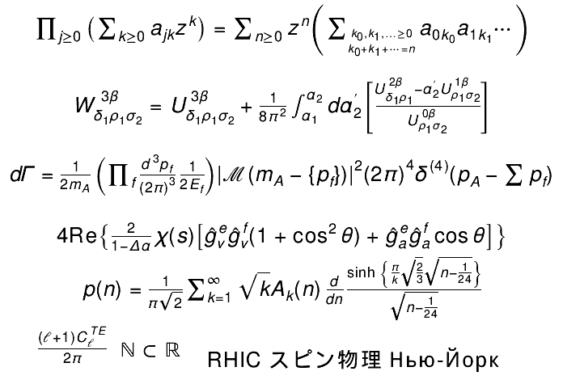

Example:
{
TMathText l;
l.SetTextAlign(23);
l.SetTextSize(0.06);
l.DrawMathText(0.50, 1.000, "\\prod_{j\\ge0} \\left(\\sum_{k\\ge0} a_{jk}z^k\\right) = \\sum_{n\\ge0} z^n \\left(\\sum_{k_0,k_1,\\ldots\\ge0\\atop k_0+k_1+\\cdots=n} a_{0k_0}a_{1k_1} \\cdots \\right)");
l.DrawMathText(0.50, 0.800, "W_{\\delta_1\\rho_1\\sigma_2}^{3\\beta} = U_{\\delta_1\\rho_1\\sigma_2}^{3\\beta} + {1\\over 8\\pi^2} \\int_{\\alpha_1}^{\\alpha_2} d\\alpha_2^\\prime \\left[ {U_{\\delta_1\\rho_1}^{2\\beta} - \\alpha_2^\\prime U_{\\rho_1\\sigma_2}^{1\\beta} \\over U_{\\rho_1\\sigma_2}^{0\\beta}} \\right]");
l.DrawMathText(0.50, 0.600, "d\\Gamma = {1\\over 2m_A} \\left( \\prod_f {d^3p_f\\over (2\\pi)^3} {1\\over 2E_f} \\right) \\left| \\mathscr{M} \\left(m_A - \\left\\{p_f\\right\\} \\right) \\right|^2 (2\\pi)^4 \\delta^{(4)} \\left(p_A - \\sum p_f \\right)");
l.DrawMathText(0.50, 0.425, "4\\mathrm{Re}\\left\\{{2\\over 1-\\Delta\\alpha} \\chi(s) \\left[ \\^{g}_\\nu^e \\^{g}_\\nu^f (1 + \\cos^2\\theta) + \\^{g}_a^e \\^{g}_a^f \\cos\\theta \\right] \\right\\}");
l.DrawMathText(0.50, 0.330, "p(n) = {1\\over\\pi\\sqrt{2}} \\sum_{k = 1}^\\infty \\sqrt{k} A_k(n) {d\\over dn} {\\sinh \\left\\{ {\\pi\\over k} \\sqrt{2\\over 3} \\sqrt{n - {1\\over 24}} \\right\\} \\over \\sqrt{n - {1\\over 24}}}");
l.DrawMathText(0.13, 0.150, "{(\\ell+1)C_{\\ell}^{TE} \\over 2\\pi}");
l.DrawMathText(0.27, 0.110, "\\mathbb{N} \\subset \\mathbb{R}");
l.DrawMathText(0.63, 0.100, "\\hbox{RHIC スピン物理 Нью-Йорк}");
}
